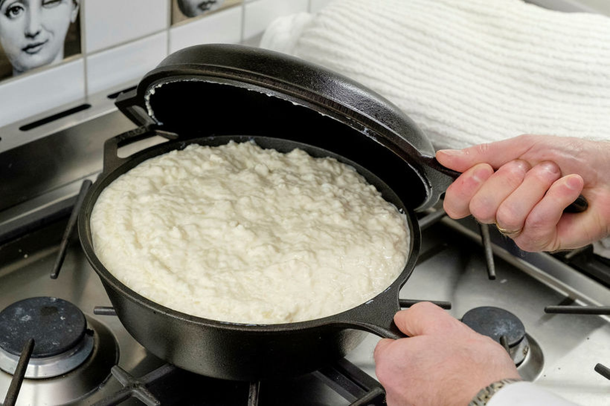

Grjónagrautur

Einfaldur grjónagrautur
Innihaldsefni
- 2,5dl hrísgrjón
- vatn
- smjörklípa
- 1 lítri mjólk
Skref
- Setjið grjón með smjöri í pott. Setjið vatn svo það hylji grjónin. Látið suðuna koma upp
- Lækkið hitann og setjið mjólkina út ís
- Látið malla við vægan hita í 20 mínútur. Bætið við mjólk ef þarf. Það má sjóða hann lengur